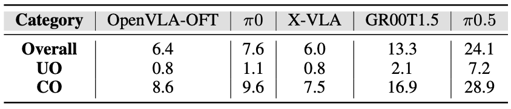

Accuracy under Multi-level Evaluation.
Level 4 Accuracy - Overall, Unseen Objects (UO), and Confounding Objects (CO).
Success Rate Decline across Multi-level Evaluation.
Multi-label evaluation across five levels. Success rates contract from Level 1 to 5 as complexity rises, yet relative strengths remain consistent: difficult dimensions are broadly shared across models and performance patterns stay aligned across levels.

Time-limit sensitivity. We scale limits relative to the human-average duration (e.g., 0.8x to 1.5x). Tight limits (0.8x) sharply hurt performance, while relaxing them yields large gains up to around 1.1x. Benefits saturate beyond ~1.3x, indicating remaining failures stem from core capability issues rather than time scarcity.